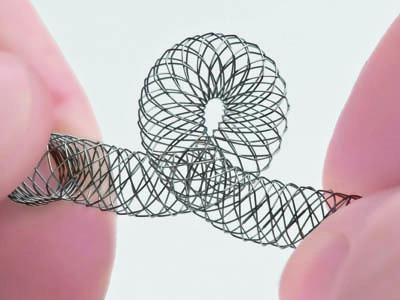

1. Endovascular Treatment Workflow
Every successful peripheral intervention follows the same pathway:
- Access the artery
- Cross the lesion
- Create support
- Prepare the vessel
- Treat the lesion
- Manage complications

Complete Guide to Access, Wires, Balloons, Stents, CTO Techniques & Advanced Devices
Every successful peripheral intervention follows the same pathway:
Most common approach. Easy puncture and crossover technique.

Provides maximum pushability for SFA and BTK interventions.

Useful when antegrade crossing fails.


| Lesion | Wire |
|---|---|
| Soft CTO | Command |
| Fibrotic CTO | Halberd |
| Calcified CTO | Astato XS20 |
| Extreme Calcium | Astato XS40 / Winn |

Improves support, pushability and wire exchange.

Excellent for BTK interventions and subintimal tracking.


Paclitaxel or Sirolimus coated balloons.

Controlled expansion and reduced dissection.

Ideal for resistant fibrotic lesions.

Fractures calcium before angioplasty.



Used for:

Plaque excision device.

Captures distal embolic debris.